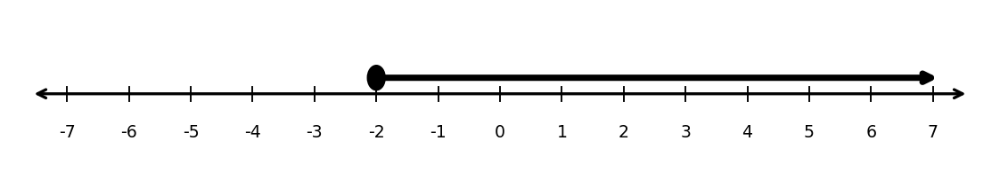
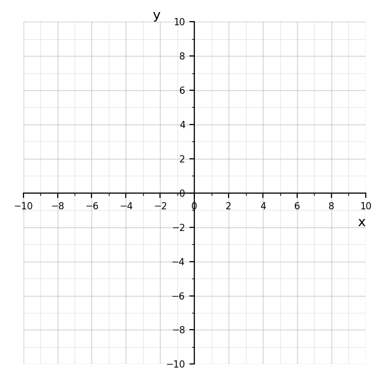

Determine whether each endpoint is included or excluded in $[1,6)$.
The number line shows a solution set.

Compare the sets $(-2,5]$ and $[-2,5)$.
A classmate claims, “The intervals $[2,5]$, $(2,5)$, $[2,5)$, and $(2,5]$ are basically the same because they all go from $2$ to $5$.” Write a response that explains why the endpoint notation matters.
The endpoint notation matters because brackets include endpoints and parentheses exclude endpoints.
For example, $[2,5]$ includes both $2$ and $5$, but $(2,5)$ includes neither endpoint. These intervals contain different numbers, even though they all describe values between $2$ and $5$.
Factor out the greatest common factor.
Identify which factoring pattern could be used.
Choices: difference of squares, perfect square trinomial, trinomial factoring.
State whether each expression is factorable over the integers.
A student says the roots, zeros, solutions, and $x$-intercepts always mean exactly the same thing.
What is correct about this statement? What needs to be clarified?
They are related because they often identify the $x$-values where a function equals $0$.
The clarification is that $x$-intercepts are points on the graph, such as $(3,0)$, while roots, zeros, and solutions are usually the input values, such as $x=3$.
Solve each equation by first factoring out the GCF.
Write a quadratic function in factored form with zeros $-6$ and $2$, and $a=1$.
Then rewrite it in standard form.
Zeros $-6$ and $2$ give factors $(x+6)$ and $(x-2)$.
Factored form: $f(x)=(x+6)(x-2)$.
Standard form: $f(x)=x^2+4x-12$.
The table shows values of a quadratic function.
| $x$ | $-3$ | $-1$ | $1$ | $3$ | $5$ |
|---|---|---|---|---|---|
| $f(x)$ | $0$ | $-8$ | $-12$ | $-8$ | $0$ |

A quadratic function has zeros $x=-5$ and $x=3$. The graph passes through $(1,-24)$.

For each expression, identify the root and the power.
Rewrite each expression in two equivalent radical forms.
Example: $x^{2/3}=\sqrt[3]{x^2}=(\sqrt[3]{x})^2$
Which expressions are equivalent to $x^{5/3}$?
Explain your choices.
Equivalent choices are a, b, d, and e.
Each of those simplifies to $x^{5/3}$. Choice c is $x^{3/5}$, not $x^{5/3}$.
A teacher writes:
$$x^{m/n}=\sqrt[n]{x^m}$$
and asks students to explain the formula.